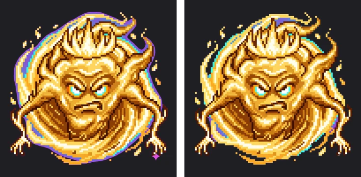
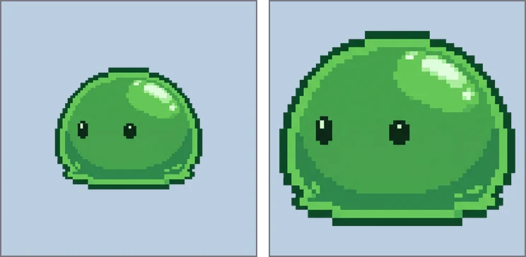

카카오 이모티콘 규격과 투명 PNG 만들기
카카오톡 이모티콘은 채팅방 배경 위에 그대로 올라갑니다. 그래서 배경이 투명한 PNG가 기본이고, 가장자리에 남은 배경색 한 줄도 어두운 채팅방에서는 바로 눈에 띕니다. AI나 그림 도구로 만든 캐릭터를 제안 규격에 맞는 투명 PNG로 만드는 과정을 실제 측정값과 함께 정리했습니다.
먼저 알아 둘 규격
아래는 카카오 이모티콘 스튜디오에서 오랫동안 안내해 온 제안 규격입니다. 카카오는 2025년 11월 26일 이모티콘 스튜디오를 개편하면서 제작 단계와 규격을 간소화했다고 발표했고, 같은 시기에 미니 이모티콘도 누구나 제안할 수 있게 열었습니다. 개수와 용량 같은 세부 조건은 바뀌었을 수 있으니, 제출 전에 스튜디오의 최신 제작 가이드를 꼭 확인하세요. 이 글은 어떤 규격이든 공통으로 필요한 ‘깨끗한 투명 PNG를 정확한 크기로 만드는 일’에 집중합니다.
| 종류 | 개수(제안 기준) | 크기 | 배경 |
|---|---|---|---|
| 멈춰있는 이모티콘 | 32종 | 360×360px | 투명 PNG |
| 움직이는 이모티콘 | 24종 | 360×360px | 투명 |
| 큰 이모티콘 | 16종 | 540×540px 기준 | 투명 |
어느 종류든 공통점은 세 가지입니다. 정사각형 캔버스, 투명 배경, 그리고 여러 장의 크기와 여백이 고르게 맞아야 한다는 점입니다.
어두운 채팅방에서 드러나는 가장자리
이모티콘은 사용자가 고른 채팅방 배경 위에 뜹니다. 밝은 배경에서는 티가 안 나던 분홍 테두리가 어두운 테마에서는 선명하게 보입니다. 아래는 마젠타 배경으로 만든 정령 캐릭터를 360px로 줄여 어두운 배경에 올린 모습입니다. 왼쪽은 그림판의 ‘색 지우기’처럼 배경색과 비슷한 픽셀만 지운 결과이고, 오른쪽은 BGPeel 기본 설정 결과입니다.

왼쪽에는 몸 둘레에 보라색 띠가 남았고, 오른쪽 아래에는 나노바나나 마크까지 그대로 있습니다. 가장자리 픽셀에는 배경색이 반쯤 섞여 있어서, 색이 정확히 같은 픽셀만 지우면 이 섞인 띠가 남기 때문입니다. 원리는 가장자리 색 번짐이 생기는 이유에서 그림으로 설명했습니다. BGPeel은 섞인 만큼만 투명하게 하고 섞인 배경색을 빼서 원래 색으로 되돌리므로 어두운 배경에서도 테두리가 남지 않습니다.
여백부터 정리하세요
AI로 만든 캐릭터는 캔버스 가운데에 작게 그려지는 경우가 많습니다. 실험에 쓴 슬라임은 2048px 캔버스에서 가로 58%, 세로 48%만 차지했습니다. 이대로 360px로 줄이면 슬라임은 가로 약 208px밖에 안 되고, 나머지는 빈 여백입니다. 이모티콘은 작은 크기로 보이기 때문에 캐릭터가 칸을 꽉 채우는 편이 훨씬 잘 보입니다.

BGPeel은 크기만 줄이고 여백을 잘라내지는 않습니다. 여백을 정리하는 방법은 세 가지입니다.
- 처음부터 크게 그리게 하기: 프롬프트에 “fill the frame, close-up, small margin”을 넣습니다. 단, 캐릭터가 테두리에 닿으면 배경색을 못 찾으니 조금은 여백을 남기게 하세요.
- 그림 도구에서 자르기: 배경을 지운 PNG를 정사각형으로 잘라 냅니다. 32장의 여백 비율을 같게 맞추려면 같은 크기의 틀로 자르는 편이 좋습니다.
- 스크립트로 한 번에: 파이썬을 쓸 수 있다면 아래처럼 투명 영역을 잘라 내고 정사각형 칸 가운데에 다시 놓을 수 있습니다.
from PIL import Image
im = Image.open("slime.png") # BGPeel에서 받은 투명 PNG
body = im.crop(im.getbbox()) # 투명한 여백 잘라내기
side = int(max(body.size) * 1.08) # 사방에 4%씩 여백
canvas = Image.new("RGBA", (side, side), (0, 0, 0, 0))
canvas.paste(body, ((side - body.width) // 2, (side - body.height) // 2))
canvas.resize((360, 360), Image.LANCZOS).save("slime_360.png")BGPeel로 360px 투명 PNG 만들기
- 캐릭터를 단색 배경(대부분 마젠타)으로 만듭니다. 이모티콘 세트라면 32장 모두 같은 배경색이 편합니다.
- BGPeel에 폴더째 끌어다 놓고 ‘변환 시작’을 누릅니다.
- 미리보기 배경을 검정과 흰색으로 번갈아 바꿔 보며 가장자리에 남은 색이 없는지 확인합니다. 채팅방 배경이 밝을 때와 어두울 때를 미리 보는 셈입니다.
- ‘내려받을 크기’에서 ‘직접 입력’을 고르고 360(큰 이모티콘은 540)을 적습니다.
- ‘저장 형식’은 PNG로 둡니다. 용량 제한이 빠듯하면 ‘256색으로 용량 줄이기’를 켭니다.
- ‘zip 다운로드’로 받습니다. 올린 폴더 구조와 파일 이름이 그대로 유지됩니다.
BGPeel은 긴 변을 기준으로 비율을 유지해 줄이기 때문에, 원본이 정사각형이 아니면 360×360이 아니라 360×270처럼 나옵니다. 원본을 1:1 비율로 만들거나 위처럼 정사각형 캔버스로 맞춘 뒤 줄이세요. 원본보다 키우지는 않으므로 원본은 360px보다 커야 합니다.
360px에서 실제 용량은 얼마나 될까
실험용 캐릭터 세 개를 BGPeel에서 360px와 540px로 줄여 저장한 실제 용량입니다(Chrome에서 측정).
| 캐릭터 | 360 PNG | 360 PNG 256색 | 540 PNG | 540 PNG 256색 |
|---|---|---|---|---|
| 슬라임 (단순) | 55KB | 19KB | 118KB | 42KB |
| 식물 (세밀함) | 171KB | 44KB | 334KB | 80KB |
| 정령 (빛 효과) | 175KB | 41KB | 340KB | 70KB |
단순한 캐릭터는 그냥 PNG로도 가볍지만, 세밀하거나 빛 효과가 많은 캐릭터는 360px에서도 170KB를 넘었습니다. 256색으로 줄이면 용량이 4분의 1 안팎으로 떨어집니다. 도트 그림이나 단순한 일러스트는 256색으로 줄여도 눈으로 차이를 찾기 어렵지만, 부드러운 그라데이션이 많은 그림은 줄무늬가 생길 수 있으니 확대해서 확인하세요. 형식별 비교는 PNG·WebP·JPG 용량 비교에 더 자세히 있습니다.
움직이는 이모티콘은
BGPeel은 GIF의 첫 프레임만 읽고, 움직이는 이미지를 만들지는 않습니다. 움직이는 이모티콘이라면 프레임을 낱장 PNG로 만든 뒤 BGPeel에서 폴더째 배경을 지우고, 받은 PNG들을 애니메이션 도구에서 하나로 묶으세요. 프레임마다 같은 설정이 적용되므로 장마다 가장자리 처리가 달라지는 일이 없습니다. 프레임 순서가 중요하다면 파일 이름을 001, 002처럼 자릿수를 맞춰 두세요.
제출 전 체크리스트
- 검정·흰색 미리보기 모두에서 가장자리에 배경색이 남지 않았나요?
- 모든 파일이 정확히 360×360(또는 540×540)인가요?
- 세트 전체에서 캐릭터 크기와 여백이 비슷한가요?
- 오른쪽 아래 AI 마크 같은 불필요한 요소가 남지 않았나요?
- 스튜디오의 최신 가이드에 적힌 개수·용량·형식과 맞나요?